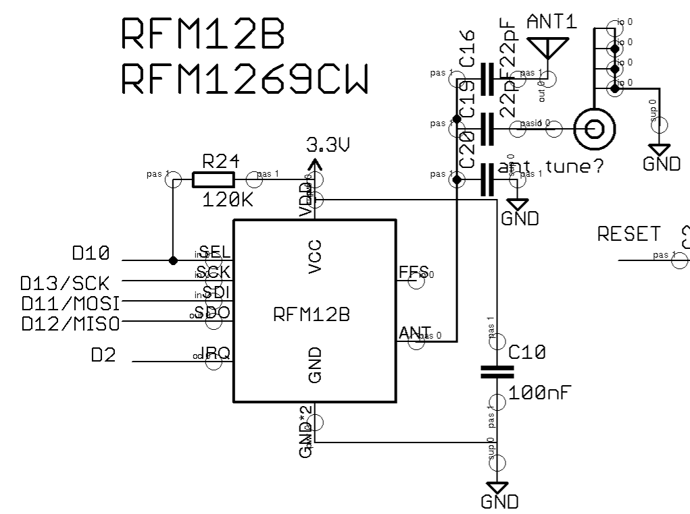
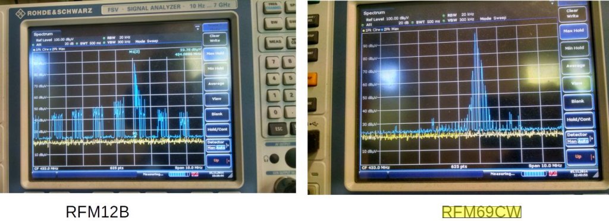

Submitted by glyn.hudson on Thu, 04/12/2014 - 11:27
The new RFM69CW RF modules has got an RSSI (received signal strength indication), this gives us an indication as to the strength of the RF signal being received. This is great as it allows us to qualitatively compare RF antenna setups. I looked into this briefly a while back when we started using SMA antenna on the emonTx V3: http://wiki.openenergymonitor.org/index.php?title=EmonTx_V3#Antenna. I measured what I expected that using SMA antenna results in slightly poorer performance than whip antennas.
The emonTx V3.4 has got an edge mounted SMA antenna with the RFM69CW soldered directly onto the PCB, with a fat PCB trace going to the ANT pin on the module through a series DC blocking 22pF cap. RSSI values from this setup seem to be reasonable.
However I would like to do some more qualitative testing. I don't know much about RF antenna matching, I would be interested to hear from anyone who has experience in the field, especially if you have access to RF measurement requirement! On the emonTx V3.4 PCB I have added in a footprint to add in an inductor to GND (incorrectly marked on PCB as C20). C19 / C16 are either or, rotating the 22pF cap by 90 degrees gives to option of using a pad on the board for whip antenna connection of edge SMA. I would love to hear for anyone who would be interested to help us tune the antenna network to improve performance. I'm happy to make hardware available for testing.
We recently had some EMC testing done (we passed :-) ), while we were in the lab we took the opportunity to do some quick measurements of RF power output. Here are the results below, it's interesting to compare RFM12B and RFM69CW, the modulation techniques used by the two modules are obviously different looking at the scope traces. It's interesting that the RFM12B seem to measure a higher power output then the RFM1269CW even though the datasheet indicates that the RFM69CW should have a higher power output, see comparison table: http://openenergymonitor.org/emon/buildingblocks/rfm69cw. Could it be I wonder if the RFM69CW RF network is just more focused, outputting more power at the tuned frequency (where it matters). This could go someway to explain why with the RFM12B it's possible to force a module in software to work on a different frequency to what it's RF network is tuned for and performance is reasonable, however doing this on the RFM69CW results in unusable short range.
emonTx V3.2 (old unit) - powered by AC-AC with RFM12B with whip antenna - in aluminum case
97.32 dBuV=-9.69dBm = 107.4uW
emonTx V3.4 (new unit) - powered by AC-AC with RFM69CW - with zero gain edge SMA antenna - in aluminum case
93.5 dBuV = - 13.4 dBm = 43.65 uW
emonTH V1.5 - powered by rechargeable batteries of unknown voltage with RFM69CW in plastic case
96 DBuV = -10.7 DBm = 85.114uW
Note: the measurement figures above should be taken as 100% accurate, they were conducted quickly at the end of the day 'just to take a look'.
Finally here's an interesting plot of RSSI values from three units in about the same location. An emonTH with RFM12B, (yellow) emonTH with RFM69CW (blue) and emonTx V3.4 with RFM69CW (red). Keeping in mind that the higher the RSSI the better (lower negative number). Its seems there is a lot of fluctuation (maybe due to temperature / humidity), in a steady state as seen for past day or two the emonTH with RFM69CW with whip ant is performing best, followed by the emonTH with RFM12B and the worst performer is the emonTx V3.4 with SMA antenna.
RF Antenna Tuning Help
Submitted by glyn.hudson on Thu, 04/12/2014 - 11:27The new RFM69CW RF modules has got an RSSI (received signal strength indication), this gives us an indication as to the strength of the RF signal being received. This is great as it allows us to qualitatively compare RF antenna setups. I looked into this briefly a while back when we started using SMA antenna on the emonTx V3: http://wiki.openenergymonitor.org/index.php?title=EmonTx_V3#Antenna. I measured what I expected that using SMA antenna results in slightly poorer performance than whip antennas.
The emonTx V3.4 has got an edge mounted SMA antenna with the RFM69CW soldered directly onto the PCB, with a fat PCB trace going to the ANT pin on the module through a series DC blocking 22pF cap. RSSI values from this setup seem to be reasonable.
However I would like to do some more qualitative testing. I don't know much about RF antenna matching, I would be interested to hear from anyone who has experience in the field, especially if you have access to RF measurement requirement! On the emonTx V3.4 PCB I have added in a footprint to add in an inductor to GND (incorrectly marked on PCB as C20). C19 / C16 are either or, rotating the 22pF cap by 90 degrees gives to option of using a pad on the board for whip antenna connection of edge SMA. I would love to hear for anyone who would be interested to help us tune the antenna network to improve performance. I'm happy to make hardware available for testing.

We recently had some EMC testing done (we passed :-) ), while we were in the lab we took the opportunity to do some quick measurements of RF power output. Here are the results below, it's interesting to compare RFM12B and RFM69CW, the modulation techniques used by the two modules are obviously different looking at the scope traces. It's interesting that the RFM12B seem to measure a higher power output then the RFM1269CW even though the datasheet indicates that the RFM69CW should have a higher power output, see comparison table: http://openenergymonitor.org/emon/buildingblocks/rfm69cw. Could it be I wonder if the RFM69CW RF network is just more focused, outputting more power at the tuned frequency (where it matters). This could go someway to explain why with the RFM12B it's possible to force a module in software to work on a different frequency to what it's RF network is tuned for and performance is reasonable, however doing this on the RFM69CW results in unusable short range.
.
emonTx V3.2 (old unit) - powered by AC-AC with RFM12B with whip antenna - in aluminum case
97.32 dBuV=-9.69dBm = 107.4uW
emonTx V3.4 (new unit) - powered by AC-AC with RFM69CW - with zero gain edge SMA antenna - in aluminum case
93.5 dBuV = - 13.4 dBm = 43.65 uW
emonTH V1.5 - powered by rechargeable batteries of unknown voltage with RFM69CW in plastic case
96 DBuV = -10.7 DBm = 85.114uW
Note: the measurement figures above should be taken as 100% accurate, they were conducted quickly at the end of the day 'just to take a look'.
Finally here's an interesting plot of RSSI values from three units in about the same location. An emonTH with RFM12B, (yellow) emonTH with RFM69CW (blue) and emonTx V3.4 with RFM69CW (red). Keeping in mind that the higher the RSSI the better (lower negative number). Its seems there is a lot of fluctuation (maybe due to temperature / humidity), in a steady state as seen for past day or two the emonTH with RFM69CW with whip ant is performing best, followed by the emonTH with RFM12B and the worst performer is the emonTx V3.4 with SMA antenna.